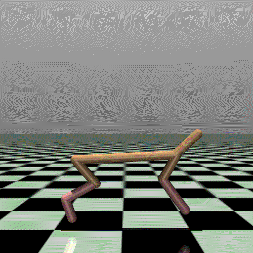

In this notebook, we explore the Trajectory Transformer (TT), a sequence modeling approach to reinforcement learning (RL) introduced in the paper Offline RL as One Big Sequence Modeling Problem by Janner et al. TT reframes RL as a sequence modeling task, leveraging Transformer architectures to model trajectories of states, actions, and rewards. By doing so, it unifies different aspects of RL—policy learning, value estimation, and model-based planning—under a single framework.
TT
This notebook provides a detailed walkthrough of TT, an offline RL model that formulates trajectory generation as a sequence modeling problem. The goal is to help readers understand TT’s inner workings, from data processing and model training to beam search-based rollouts and evaluation.
What to Expect in This Notebook?
Offline RL & TT Basics – Overview of discretization, tokenization, and trajectory modeling.
Training TT – Cross-entropy loss, weighted action importance, and optimization techniques (LR scheduling, weight decay, gradient clipping).
Rollouts & Beam Search – How TT predicts future trajectories, explores high-reward sequences, and enables long-term planning.
Evaluation – Rollout-based metrics (mean reward, variance, done ratio) to assess trajectory quality, stability, and efficiency.
Why This Notebook?
Much of the code in this notebook is inspired by the original TT implementation, with significant updates and refinements. Additionally:
Both the original TT repo and faster-trajectory-transformer are non-functional due to:
D4RL being deprecated.
Use of outdated Gym versions.
Reliance on older MuJoCo versions that no longer run.
This notebook modernizes the implementation, ensuring it runs with current libraries, while providing a clearer, more accessible explanation of TT’s mechanics.
Caution
This notebook does not introduce new concepts or bespoke code. Instead, it presents existing concepts and code in a more accessible manner for new machine learning engineers and scientists in this field.
Warning
Some of the code cells in this notebook are collapsed by default for brevity.
Tips for Following This Notebook
Take Your Time: This notebook is lengthy and cannot be completed in one sitting. Approach it slowly, and take breaks as needed to fully understand each section.
Run the Notebook: To get the most out of this notebook, run it to train a model and reproduce the results. Try using different Gym environments to see what you observe and how the TT performs in various settings.
Supplementary Resource: This document is not a replacement for the original paper. While it provides a detailed walkthrough of TT’s implementation and usage, it does not cover all the theoretical foundations and experimental results presented in the paper. Readers should refer to the original paper for a comprehensive understanding of the underlying concepts and the broader context of TT’s development.
Understand the Code: Take the time to read and understand the code snippets provided. Each section builds on the previous one, so a solid understanding of the code will help you follow along more easily.
Experiment and Modify: Don’t hesitate to experiment with the code. Modify parameters, try different environments, and observe how these changes affect the results. This hands-on approach will deepen your understanding of TT.
Use Visualizations: Pay attention to the visualizations provided in the notebook. They can help you better understand the behavior of the model and the results of your experiments.
1.1 Overview of Offline RL and Its Differences from Traditional RL
RL traditionally operates in an online setting, where an agent actively interacts with an environment, collecting data to learn an optimal policy. This approach, while effective, has several limitations:
Data inefficiency: Many RL algorithms require millions of interactions to learn good policies.
Safety concerns: Direct exploration can be costly or dangerous in real-world applications like robotics, healthcare, and autonomous driving.
Expensive data collection: Gathering high-quality data in real-world systems is often impractical.
Offline RL (also known as batch RL) addresses these challenges by learning solely from a pre-collected dataset of past interactions, without any further environment interaction. The key differences between traditional RL and offline RL are:
Feature
Traditional (Online) RL
Offline RL
Data Collection
Agent interacts with the environment continuously
Fixed dataset with no new data collection
Exploration
Active, the agent learns by trial and error
No exploration, learning is constrained by dataset
Safety
Can lead to unsafe exploration
No risk, as learning is purely from past data
Practicality
Hard to apply in real-world settings
More feasible for real-world applications
1.1.1 Why Do We Need Offline RL?
Offline RL is crucial for scenarios where active exploration is either unsafe or expensive. Some examples include:
“Imagine trying to train a self-driving car without ever letting it touch the road. Instead of real-world driving, you have to learn everything from past recorded trips—navigating intersections, avoiding pedestrians, and handling bad weather—all from historical data. Sounds impossible? This is exactly the challenge that Offline RL aims to solve.”
TT takes this a step further, leveraging the same Transformer architecture that powers language models like GPT to model sequences of actions, states, and rewards—treating RL as a prediction problem rather than a trial-and-error game.
Despite its benefits, offline RL faces unique challenges:
Out-of-Distribution (OOD) Actions: Since the agent cannot explore, it might learn to make decisions outside the dataset distribution, leading to extrapolation errors.
Limited Coverage: If the dataset does not contain enough diverse experiences, the learned policy may not generalize well.
1.1.2 Motivating the Need for the TT
The TT offers a novel approach to offline RL by treating RL as a sequence modeling problem, inspired by successes in natural language processing (NLP). Instead of relying on traditional RL components like Q-learning or policy optimization, TT models full trajectories as sequences and generates optimal action sequences through beam search planning.
1.1.3 Advantages of TT in Offline RL
Handles long-horizon dependencies: Unlike traditional RL models that rely on stepwise decisions, TT captures entire sequences of states, actions, and rewards.
Avoids OOD actions: Since TT directly models trajectories from data, it naturally generates in-distribution actions, reducing extrapolation errors.
Unifies multiple RL approaches: TT can be used for imitation learning, goal-conditioned RL, and offline RL under a single framework.
By leveraging sequence modeling, TT sidesteps many challenges of conventional offline RL, offering a more scalable and flexible alternative to existing methods.
Unlike traditional RL models that interact with the environment, TT reframes RL as a sequence modeling problem, treating trajectories as text-like sequences—similar to how GPT-4 generates coherent text.
Warning: Gym version v0.24.1 has a number of critical issues with `gym.make` such that environment observation and action spaces are incorrectly evaluated, raising incorrect errors and warning . It is recommend to downgrading to v0.23.1 or upgrading to v0.25.1
Important
If you are running this notebook on a CUDA-enabled machine, it will use the entire dataset for training and regular parameters. On non-CUDA machines, the notebook heavily subsamples the dataset and adjusts hyperparameters to ensure it can run on local development machines with lower performance. This behavior is controlled using the local variable, which you can override as needed.
# local variable is used to run the code faster on local machinelocal =not torch.cuda.is_available()
In this project, we use Gymnasium for environments and Minari for datasets, two essential libraries in RL. If you’re new to RL, understanding these libraries will help you get started with training and evaluating RL models efficiently. If you are already familiar with these libraries feel free to skip this section.
2.1 Gymnasium: A Standard for RL Environments
2.1.1 What is Gymnasium?
Gymnasium (formerly OpenAI Gym) is a widely used library for simulating RL environments. It provides a standardized interface to interact with different RL tasks, making it easy to test and compare different RL algorithms.
2.1.2 Key Concepts in Gymnasium
Environments:
An environment represents a problem setting where an agent interacts and learns.
Examples include robotic control (Mujoco), video games (Atari), and navigation tasks (GridWorld).
Agent-Environment Loop:
RL involves an agent taking actions in an environment, receiving rewards, and transitioning to new states.
Gymnasium provides the standard step() function to execute this interaction.
Gymnasium API:
env = gymnasium.make("CartPole-v1") → Creates an environment.
obs, reward, done, truncated, info = env.step(action) → Takes an action and returns the next observation, reward, and status flags.
env.reset() → Resets the environment to its initial state.
Observation and Action Spaces:
env.observation_space: Defines what states look like (e.g., position, velocity).
env.action_space: Defines valid actions an agent can take.
Rendering:
env.render() can visualize the environment (useful for debugging and understanding agent behavior).
Gymnasium helps us simulate real-world scenarios, allowing RL models to learn efficiently in controlled settings.
2.2 Minari: Standardized Datasets for Offline RL
2.2.1 What is Minari?
Minari is a dataset library designed for offline RL, where agents learn solely from pre-collected experience datasets instead of interacting with the environment in real time. It provides high-quality, standardized datasets for different RL tasks.
2.2.2 Why Use Minari?
In offline RL, training directly in Gymnasium is not feasible because the agent cannot collect new data. Instead, Minari offers:
Curated datasets with state-action-reward trajectories from past interactions.
Reproducibility, ensuring fair comparisons across different RL methods.
Seamless integration with Gymnasium, so datasets match Gym environments.
2.2.3 Key Concepts in Minari
Datasets in Offline RL:
Each dataset contains trajectories (sequences of (state, action, reward, next_state)).
These are generated using pre-trained policies (expert, medium, or random behavior).
Instead of interacting with the environment (env.step()), the agent learns by sampling from the dataset. This is similar to supervised learning, where the agent trains on past experiences rather than live exploration.
2.3 Bringing It All Together: Gymnasium + Minari in Offline RL
Gymnasium provides a standard interface for RL environments (but in offline RL, the agent doesn’t interact with it).
In out project we will use Gymnasium interface to interact with the environment during beam search.
Minari provides pre-recorded experience datasets, allowing the agent to learn without exploration.
Our project trains a TT model using Minari datasets to understand and optimize decision-making without direct environment interaction.
3 Loading Data
In this implementation, I initialize the environment and fetch the dataset from Minari. We’ll use the HalfCheetah Gym environment and its corresponding datasets from Minari to demonstrate TT. Some Gym environments use dictionaries to represent observation and action spaces, but neural networks work with ndarrays. To address this, I’ve implemented helper functions to convert observations and actions between dictionaries and flat arrays. The notebook is designed to work with any Gym environment, not just HalfCheetah, so the implementation is more flexible and a bit more complex as a result.

half_cheetah
Define environment related utilities
def get_space_dim(space):ifisinstance(space, spaces.Discrete):return1elifisinstance(space, spaces.Box):return space.shape[0]elifisinstance(space, spaces.Dict):returnsum([get_space_dim(v) for v in space.values()])else:raiseValueError("Unsupported observation space")def flatten_space(s_dict: Any, space: spaces.Space) -> np.ndarray:ifisinstance(space, spaces.Discrete):return s_dictelifisinstance(space, spaces.Box):return s_dictelifisinstance(space, spaces.Dict):return np.concatenate( [flatten_space(s_dict[k], space.spaces[k]) for k in space.spaces.keys()], axis=-1, )else:raiseValueError("Unsupported observation space")def unflatten_space(s_flat: np.ndarray, space: spaces.Space) ->dict:ifisinstance(space, spaces.Discrete):return s_flatelifisinstance(space, spaces.Box):return s_flatelifisinstance(space, spaces.Dict): s_dict = {} start =0for k, v in space.spaces.items(): end = start + get_space_dim(v) s_dict[k] = unflatten_space(s_flat[:, start:end], v) start = endreturn s_dictelse:raiseValueError("Unsupported observation space")# Test the flatten_space_dict and unflatten_space_dict functionstest_dict = {"obs": np.array([[1, 2, 3], [4, 5, 6]]), "act": np.array([[0], [1]])}test_space = spaces.Dict( {"obs": spaces.Box(low=0, high=10, shape=(3,)), "act": spaces.Discrete(2)})test_flat = flatten_space(test_dict, test_space)test_unflat = unflatten_space(test_flat, test_space)assert np.isclose( test_flat, np.array([[0, 1, 2, 3], [1, 4, 5, 6]])).all(), f"Flattened array {test_flat} is not as expected."assert np.isclose( test_unflat["obs"], test_dict["obs"]).all(), f"Unflattened observation {test_unflat['obs']} is not as expected."assert np.isclose( test_unflat["act"], test_dict["act"]).all(), f"Unflattened action {test_unflat['act']} is not as expected."# test discrete spacetest_dict = np.array([[0], [1]])test_space = spaces.Discrete(2)test_flat = flatten_space(test_dict, test_space)test_unflat = unflatten_space(test_flat, test_space)assert np.isclose( test_flat, test_dict).all(), f"Flattened array {test_flat} is not as expected."assert np.isclose( test_unflat, test_dict).all(), f"Unflattened array {test_unflat} is not as expected."# test box spacetest_dict = np.array([[1, 2, 3], [4, 5, 6]])test_space = spaces.Box(low=0, high=10, shape=(3,))test_flat = flatten_space(test_dict, test_space)test_unflat = unflatten_space(test_flat, test_space)assert np.isclose( test_flat, test_dict).all(), f"Flattened array {test_flat} is not as expected."assert np.isclose( test_unflat, test_dict).all(), f"Unflattened array {test_unflat} is not as expected."print("All tests passed successfully.")
All tests passed successfully.
Important
To control which environment to run set dataset_ref and env_name from Minari.
By default, when local=True, the notebook will train on all episodes in the dataset. If you would like to train on a subsample, you can control this behavior using the n_episodes parameter.
# other parametersn_episodes: Optional[int] =Noneifnot local else10
/Users/abrar/Library/Caches/pypoetry/virtualenvs/blog-FROQ9Grm-py3.11/lib/python3.11/site-packages/minari/dataset/minari_dataset.py:204: UserWarning: Installed mujoco version 3.1.6 does not meet the requirement ==3.2.3.
We recommend to install the required version with `pip install "mujoco==3.2.3"`
warnings.warn(
Number of episodes: 10
Observation dim: 17, Action dim: 6
Reward dim: 1, Value dim: 1
Transition dim: 25
One episode from the dataset: EpisodeData(id=502, total_steps=1000, observations=ndarray of shape (1001, 17) and dtype float64, actions=ndarray of shape (1000, 6) and dtype float32, rewards=ndarray of 1000 floats, terminations=ndarray of 1000 bools, truncations=ndarray of 1000 bools, infos=dict with the following keys: [])
4 Key Terminology
State/Observation: Represents the current condition of the environment. In TT, states are discretized into tokens and modeled as part of a sequence. A state is a vector [s1, s2, s3, ...], where the number of state variables is referred to as observation_dim. For example, in HalfCheetah, observation_dim = 17.
Action: A decision taken by the agent that affects the environment. Actions are also vectorized, e.g., [a1, a2, ...], and modeled alongside states in TT. The number of action variables is called action_dim. For HalfCheetah, action_dim = 6.
Reward: A scalar signal r that quantifies the immediate outcome of an action. TT uses rewards to guide trajectory optimization. Typically, reward_dim = 1, but this is not always the case.
Value: The expected cumulative future reward from a given state. In TT, values (v) are used during beam search for trajectory optimization. Like rewards, values are scalars, so value_dim = 1.
Transition: A single step in the environment, represented as a tuple (state, action, reward, value), e.g., [s1, s2, s3, ..., a1, a2, ..., r, v]. The total number of variables in a transition is transition_dim = observation_dim + action_dim + reward_dim + value_dim. The number of consecutive transitions used for training is referred to as n_transitions.
Sequence/Trajectory: A sequence of multiple transitions that serve as input to the model, e.g., [s1, s2, s3, a1, a2, r, v, s1, s2, s3, a1, a2, r, v, ...]. In TT, trajectories are modeled as discrete token sequences.
Episode: A complete run from an initial state to termination. A sequence is a subset of an episode, but TT trains on multiple episodes to learn generalizable trajectory patterns.
Rollout: The process of generating a trajectory by autoregressively sampling tokens (states, actions, rewards) using TT. Rollouts can be greedy (deterministic), stochastic (using temperature or top-k sampling), or beam-searched (optimizing reward-to-go). TT rollouts allow policy evaluation, trajectory forecasting, and planning in offline RL.
5 Hyperparameters
# Model parameters# n_transitions is the number of transitions in a sequence, one transition is (s, a, r, v)n_transitions =10# seq_len is the length of the sequence as seen by the modelseq_len = n_transitions * transition_dim# vocab_size is the number of bins used for discretization# it also represents the size of the vocabulary for the embeddingvocab_size =100max_bins = vocab_sizediscount_factor =0.99embedding_dim =128ifnot local else32# number of heads in the multihead attentionn_heads =4ifnot local else4# number of blocks in the transformern_blocks =4ifnot local else4n_epochs =70ifnot local else5batch_size =256ifnot local else128# whether to use separate heads for each transition dimensionuse_sep_heads =Truelr =0.0006weight_decay =0.1betas = (0.9, 0.95)clip_grad =1.0# how often to evaluate the model. During evaluation, the model is used during rolloutseval_every =5ifnot local else5strategy ="uniform"# "quantile" or "uniform" for discritization
Setup data directories
# create a directory to save the modelbase_dir =f"data/{dataset_ref}"checkpoint_path =f"{base_dir}/"load_checkpoint = (False# set to False if you want to train from scratch even if a checkpoint exists)# if load_checkpoint is False and a checkpoint exists, delete itif load_checkpoint isFalseand os.path.exists(checkpoint_path):# remove only model checkpointsfor f in os.listdir(checkpoint_path):if f.startswith("model"): os.remove(os.path.join(checkpoint_path, f))
6 Discretizer
6.1 What is Discretization?
Discretization is the process of converting continuous variables (e.g., states, actions, rewards) into discrete tokens that can be processed by a model designed for categorical data, such as a Transformer. Instead of representing values as continuous numbers, they are quantized into a fixed set of bins, allowing TT to model RL problems as a sequence modeling task, similar to how language models process words.
The TT applies autoregressive sequence modeling, which typically operates over discrete token sequences (like words in NLP). Since RL states and actions are usually continuous, discretization is necessary to make them compatible with Transformer architectures.
Note
Autoregressive sequence modeling is a method where each element in a sequence is predicted based on the previous elements, one step at a time, allowing the model to generate or forecast sequences by building on its own prior outputs.
6.3 Key reasons for discretization in TT:
Enables Direct Application of Transformers: Transformers require discrete inputs, and discretization allows TT to treat RL data like a language modeling problem.
Improves Long-Horizon Prediction: Standard RL models often struggle with compounding errors in continuous spaces. Discretization reduces error accumulation and improves stability in trajectory prediction.
Avoids Gaussian Assumptions: Traditional model-based RL methods assume Gaussian-distributed transitions, which can limit expressivity. TT, using discretization, models more complex distributions without restrictive assumptions.
Unifies State, Action, and Reward Modeling: Discretizing all components enables TT to model joint distributions over states, actions, and rewards, leading to better trajectory optimization.
6.4 How Does Discretization Work in TT?
Each continuous state and action dimension is divided into a fixed number of bins (tokens). TT then models trajectories as sequences of these discrete tokens. The paper explores two discretization methods:
Uniform Discretization:
Divides the range of each variable into equally spaced intervals.
Preserves Euclidean distance but can be sensitive to outliers.
Quantile Discretization:
Divides data so that each bin contains an equal number of data points.
Ensures all tokens are well-represented in the dataset, improving learning stability.
6.5 How TT Uses Discretized Inputs
A trajectory (state, action, reward, value, etc.) is broken into discrete tokens.
The Transformer learns sequence patterns over these tokens, predicting the most probable future trajectory.
During inference, TT generates the next token step-by-step, similar to how language models predict the next word.
6.6 Bin Size trade offs
Choosing a large bin size reduces reconstruction loss, preserving more information from continuous inputs. However, this increases the number of discrete tokens, requiring a larger vocabulary size for the embedding map. While this gives the model more expressive capacity, it comes at the cost of higher memory usage and longer training time.
Conversely, choosing a small bin size results in fewer tokens, leading to faster training and lower memory requirements. However, this comes at the cost of higher reconstruction loss, causing a loss of precision in trajectory representation and potentially degrading model performance.
The trade-off lies in balancing model expressiveness and training efficiency while minimizing information loss.
By discretizing continuous RL data, TT effectively applies Transformer-based sequence modeling to RL, achieving strong long-horizon planning and offline RL performance.
class KBinsDiscretizer:""" This class is responsible for encoding and decoding continuous values into discrete bins. Number of bins are fixed for all the features. """def__init__(self, dataset: np.ndarray, n_bins: int, strategy: str="ordinal"):self.n_bins = n_binsself.strategy = strategy# bin_edges shape: (n_features, n_bins + 1)self.bin_edges =self._find_bin_edges(dataset)# bin_centers shape: (n_features, n_bins)self.bin_centers = (self.bin_edges[:, :-1] +self.bin_edges[:, 1:]) *0.5self.bin_centers_torch = torch.from_numpy(self.bin_centers).float()def _find_bin_edges(self, dataset: np.ndarray):# dataset shape: (n_samples, n_features) bin_edges = []ifself.strategy =="uniform":# min and max values for each feature, shpae: (n_features,) mins, maxs = np.min(dataset, axis=0), np.max(dataset, axis=0)# bin_edges shape: (n_features, n_bins + 1) bin_edges = np.linspace(mins, maxs, self.n_bins +1).Telifself.strategy =="quantile": quantiles = np.linspace(0, 100, self.n_bins +1)# bin_edges shape: (n_features, n_bins + 1) bin_edges = np.percentile(dataset, quantiles, axis=0).Telse:raiseValueError(f"Unknown strategy: {self.strategy}")return bin_edgesdef encode(self, X: np.ndarray, subslice: Optional[Tuple[int, int]] =None ) -> np.ndarray:# use subslice to encode only a part of the features in the Xif X.ndim ==1:# this is to handle the case where we have a single feature X = X[None]# data shape: (n_samples, n_features) edges =self.bin_edgesif subslice isnotNone: start, end = subslice edges = edges[start:end]# Xt represents discretized data, shape: (n_samples, n_features) Xt = np.zeros(X.shape, dtype=np.long)# See documentation of numpy.isclose for an explanation of ``rtol`` and ``atol``. rtol =1.0e-5 atol =1.0e-8for jj inrange(X.shape[1]):# Values which are close to a bin edge are susceptible to numeric# instability. Add eps to X so these values are binned correctly# with respect to their decimal truncation. eps = atol + rtol * np.abs(X[:, jj])# why [1:]? bins = edges - 1, but its unclear why we leave out the first element and not the last Xt[:, jj] = np.digitize(X[:, jj] + eps, edges[jj][1:])# clip the values to be within the range [0, n_bins - 1] np.clip(Xt, 0, self.n_bins -1, out=Xt)return Xtdef decode(self, Xt: np.ndarray, subslice: Optional[Tuple[int, int]] =None ) -> np.ndarray:# use subslice to decode only a part of the features in the Xtif Xt.ndim ==1:# this is to handle the case where we have a single feature Xt = Xt[None]# data shape: (n_samples, n_features) centers =self.bin_centersif subslice isnotNone: start, end = subslice centers = centers[start:end] X = np.zeros(Xt.shape, dtype=np.float64)for jj inrange(Xt.shape[1]): X[:, jj] = centers[jj, np.int_(Xt[:, jj])]return Xdef expectation(self, probs: np.ndarray, subslice: Optional[Tuple[int, int]] =None ) -> np.ndarray:# given the probabilities of each bin, calculate the expectation of the feature values# perticularly useful when we have a distribution over the bins, maybe from a model after softmax# from logits.# probs shape: (n_samples, n_features, n_bins)if probs.ndim ==1:# this is to handle the case where we have a single feature probs = probs[None]# probs shape: (batch_size, n_features, n_bins)# bin_centers shape: (n_features, n_bins) -> (1, n_features, n_bins)if torch.is_tensor(probs): bin_centers =self.bin_centers_torch.unsqueeze(0)else:# bin_centers shape: (n_features, n_bins) -> (1, n_features, n_bins) bin_centers = np.expand_dims(self.bin_centers, axis=0)if subslice isnotNone: start, end = subslice bin_centers = bin_centers[:, start:end]# use formula E[X] = sum(p(x) * x) for all x# (batch_size, n_features, n_bins) * (1, n_features, n_bins) -> sum (batch_size, n_features, n_bins) -> (batch_size, n_features) X = (probs * bin_centers).sum(axis=-1)return Xdef to(self, device):self.bin_centers_torch =self.bin_centers_torch.to(device)
Test the KBinsDiscretizer class
# Test arraytest_arr = np.array([[1, 2], [3, 4], [5, 6]])# Initialize the discretizerdiscretizer = KBinsDiscretizer(test_arr, 1000, strategy="uniform")# Encode and decode the test arrayencoded = discretizer.encode(test_arr)decoded = discretizer.decode(encoded)# Check if the decoded array is close to the original arrayassert np.isclose( decoded, test_arr, atol=1e-2).all(), f"Decoded array {decoded} is not close to the original array {test_arr}"# Generate random probabilitiesprobs = F.softmax(torch.from_numpy(np.random.rand(3, 2, 1000)), dim=-1).numpy()# Calculate the expectationexpectation = discretizer.expectation(probs)# Check if the expectation is close to the mean of the test arrayexpected_mean = np.tile(np.mean(test_arr, axis=0), (3, 1))assert np.isclose( expectation, expected_mean, atol=1e-1).all(), f"Expectation {expectation} is not close to the expected mean {expected_mean}"print("All tests passed successfully.")
All tests passed successfully.
7 Pytorch Dataset
Minari datasets store offline RL trajectories, nore specifically it contain list of episodes, but they need to be structured into a PyTorch-compatible format for training of the TT. This conversion is essential for:
Batch Processing: PyTorch’s Dataset and DataLoader enable efficient mini-batch training, improving speed and scalability.
Discretization & Sequence Formatting: TT requires discretized trajectory sequences, which involves converting continuous states, actions, and rewards into discrete tokens that can be processed like a language model.
Loss Masking & Padding: Not all trajectories are of the same length. The conversion ensures proper padding and masking, preventing short sequences from corrupting training.
Efficient Sampling: Instead of loading full trajectories, PyTorch datasets allow sampling smaller transition sequences, making training more memory-efficient.
7.1 Rewards-to-Go (RTG)
Rewards-to-Go (RTG) is the discounted cumulative sum of future rewards from a given time step until the end of the trajectory. It represents the expected return from a state, assuming the agent follows the observed trajectory.
where \((\gamma)\) (discount factor) determines how much future rewards influence current decisions.
7.1.2 Why is RTG Important in TT?
RTG is only relevant for reward-maximizing beam search. In contrast, it is not used during imitation learning or goal-conditioned RL, where the focus is on replicating behavior or reaching a target state rather than optimizing for rewards.
Encodes Long-Term Future Returns: Helps the model learn which actions lead to high rewards over time.
No Need for Value Functions: Unlike traditional RL, TT doesn’t learn separate value functions; RTG is used directly as input.
Improves Planning: During inference, TT biases beam search towards high RTG sequences, optimizing decision-making.
By including RTG as a token in TT, the model can predict high-reward trajectories more effectively, making it powerful for offline RL and long-horizon planning.
def join_trajectory(env: Env, episode: EpisodeData, discount: float=0.99):# Convert the object of type EpisodeData to a numpy array. EpisodeData# contains the following fields: observations, actions, rewards, other# and each of these fields is a numpy array. We need to concatenate# these arrays along the last axis to get a single array for each time. success = episode.terminations# end of the trajectory is the first success or the end of the episode success_indices = np.where(success)[0]iflen(success_indices) >0: last_success_idx = success_indices[0] trajectory_len = last_success_idx +1else: last_success_idx =-1 trajectory_len =len(episode.rewards)# shape (trajectory_len, observation_dim) observations = episode.observations# shape (trajectory_len, action_dim) actions = episode.actions# shape (trajectory_len, action_dim) rewards = episode.rewards[:trajectory_len]# use values to store the rewards to go# for a given time step, the value is the sum of rewards from that time step# to the end of the trajectory, discounted by discount factor at each time step values = np.zeros_like(rewards, dtype=np.float32)# calculate discounts for each time step discounts = discount ** np.arange(trajectory_len)# calculate rewards to go with discountfor t inrange(trajectory_len): values[t] = (rewards[t +1 :].T * discounts[: -t -1]).sum()# drop the last state because we don't have a reward for it states = flatten_space(observations, env.observation_space) states = states[:trajectory_len] actions = flatten_space(actions, env.action_space) actions = actions[:trajectory_len] rewards = rewards[:, None] values = values[:, None]# shape (trajectory_len, observation_dim + action_dim + reward_dim + value_dim) joined = np.concatenate([states, actions, rewards, values], axis=-1)return joinedclass DiscretizeDataset(Dataset):# Each input into the sequence model needs to be (batch_size, tokens)# output should be in groups of transitionsdef__init__(self, env: Env, m_dataset: MinariDataset, n_transitions: int, discount: float=0.99, max_bins: int=1000, strategy: str="quantile", cache_path: Optional[str] =None, load_checkpoint: bool=True, ):self.m_dataset = m_datasetself.n_transitions = n_transitions ds_len =len(self.m_dataset)self.cache_name = (f"joined_trajectories_{n_transitions}_{max_bins}_{strategy}_{ds_len}.pkl" ) cache_path = os.path.join(cache_path, self.cache_name) if cache_path elseNoneif load_checkpoint and cache_path isnotNoneand os.path.exists(cache_path):print(f"Loading cached dataset from {cache_path}")withopen(cache_path, "rb") as f:self.joined_trajectories = pickle.load(f)else:# this list will contain the joined trajectories, each item in the list# is a trajectory of shape (trajectory_len, observation_dim + action_dim + reward_dim + value_dim)# and that trajectory is one episodedata from the m_datasetself.joined_trajectories = []for episode in m_dataset:self.joined_trajectories.append(join_trajectory(env, episode, discount))print(f"Caching dataset to {cache_path}")withopen(cache_path, "wb") as f: pickle.dump(self.joined_trajectories, f)self.discretizer = KBinsDiscretizer( n_bins=max_bins, strategy=strategy,# concatenate all the trajectories# shape (n_samples * trajectory_len, observation_dim + action_dim + reward_dim + value_dim) dataset=np.concatenate(self.joined_trajectories, axis=0), )# we need a dataset for training sequence model# given that we need a sequence of n_transitions, we need to generate# indices such that we can get n_transitions from each trajectory indices = []for traj_idx, joined_trajectory inenumerate(self.joined_trajectories): traj_len = joined_trajectory.shape[0] end = traj_len -1for i inrange(end): indices.append((traj_idx, i, i + n_transitions))self.indices = np.array(indices)def__len__(self):returnlen(self.indices)def__getitem__(self, idx): traj_idx, start, end =self.indices[idx]# sample a sequence of n_transitions from trajectory at traj_idx joined =self.joined_trajectories[traj_idx][start:end] loss_pad_mask = np.ones((self.n_transitions, joined.shape[-1]), dtype=np.long)# some sequences may be shorter than n_transitions, pad them with zeros# and set the mask to zero for the padded part, this mask will be used# to mask the loss when calculating the lossif joined.shape[0] <self.n_transitions:# pad along dimension 0, zero padding at the beginning# and (self.n_transitions - joined.shape[0]) padding at the end joined = np.pad( joined, ((0, self.n_transitions - joined.shape[0]), (0, 0)), mode="constant", constant_values=0, ) loss_pad_mask[joined.shape[0] :] =0# since transformer model expects discrete values, we need to encode the# continuous values into discrete bins# shape (n_transitions, transition_dim) -> (n_transitions, transition_dim) joined_discretized =self.discretizer.encode(joined)# shape (n_transitions, transition_dim) -> (n_transitions * transition_dim)# i'e [s1, a1, r1, v1, s2, a2, r2, v2, ...] joined_discretized = joined_discretized.reshape(-1).astype(np.long) loss_pad_mask = loss_pad_mask.reshape(-1)# return input, target, and mask# since sequence model predicts the next token, target is the next token in the sequencereturn joined_discretized[:-1], joined_discretized[1:], loss_pad_mask[:-1]
dataset = DiscretizeDataset( env=env, m_dataset=m_dataset, n_transitions=n_transitions, discount=discount_factor, max_bins=max_bins, strategy=strategy, cache_path=checkpoint_path, load_checkpoint=load_checkpoint,)print(f"Length of dataset: {len(dataset)}")print(f"Shape of input: {dataset[0][0].shape}")print(f"Shape of target: {dataset[0][1].shape}")print(f"Shape of mask: {dataset[0][2].shape}")
Caching dataset to data/mujoco/halfcheetah/expert-v0/joined_trajectories_10_100_uniform_10.pkl
Length of dataset: 9990
Shape of input: (249,)
Shape of target: (249,)
Shape of mask: (249,)
Let’s inspect one input, target, and mask. The call to dataset[0] fetches the first record from the dataset. For brevity, we will show only the first 10 elements. Notice how the target is simply the input shifted by 1. This approach ensures compatibility with sequence modeling, similar to how it is done in NLP. Mask value of 1 signifies that the token should be part of loss calculation.
Test the DiscretizeDataset class
# show input, target, and mask for the first item in the datasetprint(f"Input: {dataset[0][0][:10]}")print(f"Target: {dataset[0][1][:10]}")print(f"Mask: {dataset[0][2][:10]}")
def round_to_multiple(number, multiple):""" Rounds a given number up to the nearest multiple of a specified value. Args: number (int or float): The number to be rounded. multiple (int or float): The multiple to which the number should be rounded. Returns: int or float: The number rounded up to the nearest multiple of the specified value. """ pad = (multiple - number % multiple) % multiplereturn number + pad# Test the round_to_multiple functionassert round_to_multiple(5, 3) ==6assert round_to_multiple(6, 3) ==6assert round_to_multiple(7, 3) ==9
Schedule the learning rate - linear warmup and cosine decay karpathy/minGPT
def weight_decay_groups( model, whitelist_modules, blacklist_modules, blacklist_named=None):# from https://github.com/karpathy/minGPT decay, no_decay =set(), set()for mn, m in model.named_modules():for pn, p in m.named_parameters(): fpn ="%s.%s"% (mn, pn) if mn else pn # full param name# starts with for rnn's, endswith otherif pn.startswith("bias") or pn.endswith("bias"):# all biases will not be decayed no_decay.add(fpn)elif (pn.startswith("weight") or pn.endswith("weight")) andisinstance( m, blacklist_modules ):# weights of blacklist modules will NOT be weight decayed no_decay.add(fpn)elif (pn.startswith("weight") or pn.endswith("weight")) andisinstance( m, whitelist_modules ):# weights of whitelist modules will be weight decayed decay.add(fpn)if blacklist_named isnotNone:for name in blacklist_named: no_decay.add(name) # also no decay# validate that we considered every parameter param_dict = {pn: p for pn, p in model.named_parameters()} inter_params = decay & no_decay union_params = decay | no_decayiflen(inter_params) !=0: warnings.warn(f"parameters {str(inter_params)} made it into both decay/no_decay sets! They will be added to only no_decay by default." ) decay = decay - no_decay inter_params = decay & no_decay union_params = decay | no_decayiflen(param_dict.keys() - union_params) !=0: warnings.warn(f"parameters {str(param_dict.keys() - union_params)} were not separated into either decay/no_decay set! They will be added to decay by default." ) decay = decay | (param_dict.keys() - union_params) optim_groups = {"decay": [param_dict[pn] for pn insorted(list(decay))],"nodecay": [param_dict[pn] for pn insorted(list(no_decay))], }return optim_groupsclass GPTScheduler:""" Linear warmup to optimizer inital_lr for #warmup_tokens, then cosine decay to inital_lr * final_lr_ratio for the rest #final_tokens source: https://github.com/karpathy/minGPT """def__init__(self, optimizer, warmup_tokens, final_tokens, final_lr_ratio=0.1, decay=True ):self.optimizer = optimizer# assuming that lr same for all groupself.init_lr = optimizer.param_groups[0]["lr"]self.warmup_tokens = warmup_tokensself.final_tokens = final_tokensself.final_lr_ratio = final_lr_ratioself.decay = decayself.tokens_count =0.0def step(self, batch_size): lr_mult =self.__get_lr_multiplier(batch_size)for group inself.optimizer.param_groups: group["lr"] =self.init_lr * lr_multdef get_current_lr(self): lr_mult =self.__get_lr_multiplier(0.0)returnself.init_lr * lr_multdef __get_lr_multiplier(self, batch_size):self.tokens_count += batch_sizeassert (self.tokens_count <=self.final_tokens ), f"number of tokens {self.tokens_count} already bigger than number of tokens for one cycle"ifself.tokens_count <self.warmup_tokens: lr_mult =float(self.tokens_count) /float(max(1, self.warmup_tokens))elifself.tokens_count >=self.warmup_tokens andself.decay: tokens_passed =self.tokens_count -self.warmup_tokens tokens_left =self.final_tokens -self.warmup_tokens progress =float(tokens_passed) /float(max(1, tokens_left)) lr_mult =max(self.final_lr_ratio, 0.5* (1.0+ math.cos(math.pi * progress)) )else: lr_mult =1.0return lr_multdef state_dict(self):# just for checkpoint callbackpassdef get_optimizer(model, weight_decay, learning_rate, betas): param_groups = weight_decay_groups( model=model, whitelist_modules=(torch.nn.Linear, torch.nn.MultiheadAttention, EinLinear), blacklist_modules=(torch.nn.LayerNorm, torch.nn.Embedding), blacklist_named=("positional_embedding",), ) optim_groups = [ {"params": param_groups["decay"], "weight_decay": weight_decay}, {"params": param_groups["nodecay"], "weight_decay": 0.0}, ] optimizer = torch.optim.AdamW(optim_groups, lr=learning_rate, betas=betas)return optimizerdef get_scheduler(optimizer, warmup_tokens, final_tokens): scheduler = GPTScheduler( optimizer, warmup_tokens=warmup_tokens, final_tokens=final_tokens, decay=True, )return scheduler
8 Model
TT Model
8.1 Tokenization in TT: Why and How Offsetting is Done
In traditional NLP Transformers, each token comes from a single vocabulary (e.g., words or subwords). However, in TT, we deal with multiple types of tokens—states, actions, rewards, and values—each with a shared vocabulary size (determined by the number of discretization bins max_bins).
Since we have multiple token types, we need a way to differentiate them. This is done using offsetting, where each token type is assigned a different section of the vocabulary. Kinda of like local vocab and global vocab.
8.1.1 How Offsetting Works
For a given vocab_size, the tokens are offset by multiples of it:
For example, if vocab_size = 10 and we have 4 token types (state, action, reward, value), the token indices are adjusted as follows:
State tokens: [0-9]
Action tokens: [10-19]
Reward tokens: [20-29]
Value tokens: [30-39]
This ensures that each token type is uniquely represented, preventing mix-ups between different types of information.
8.2 EinLinear: Einstein Notation as a Shorthand for MLP
Einstein summation notation (einsum) is a compact and efficient way of writing tensor operations. In EinLinear, we use torch.einsum() instead of the standard torch.matmul(), making the computation more explicit and flexible.
8.2.1 How EinLinear Works
A regular MLP applies a linear transformation:
\[
Y = XW^T + b
\]
For multiple models (e.g., if we use separate linear layers for different token types), EinLinear performs batched linear transformations efficiently:
eoi represents the weight tensor (n_models, out_features, in_features).
bei represents the input tensor (batch_size, n_models, in_features).
The result is (batch_size, n_models, out_features).
This is just a compact way of writing matrix multiplication across multiple models, saving computation time and improving clarity.
8.3 Causal Masking: Why and How?
Transformers process entire sequences at once, but in RL, future information must not be leaked to the model during training. This is handled via causal masking.
8.3.1 Types of Masking in TT
8.3.1.1 Self-Causal Masking
Ensures each token only attends to past tokens.
Implemented using a lower triangular mask (future tokens are masked out).
Prevents information leakage during training.
8.3.1.2 Value Masking
In TT, reward-to-go (RTG) is included as a token.
RTG contains future information, so it must not be attended to by other tokens.
The mask explicitly blocks RTG tokens during self-attention.
8.4 KV Cache: Why and How It Works
In inference, processing one token at a time (autoregressive decoding) is inefficient if we recompute self-attention for all previous tokens at every step. Key-Value (KV) Caching solves this by storing past computations, reducing redundant work.
8.4.1 How KV Cache Works
During inference, previously computed key-value (K-V) pairs are stored.
When a new token arrives, we append its K-V pairs instead of recomputing for all tokens.
This makes generation much faster.
class Block(nn.Module):# Transformer blockdef__init__(self, seq_len, embedding_dim: int, transition_dim: int, n_heads: int, attention_dropout: float, residual_dropout: float, ):super().__init__()self.attn = nn.MultiheadAttention( embedding_dim, n_heads, batch_first=True, dropout=attention_dropout )self.attn_norm = nn.LayerNorm(embedding_dim)self.fc_norm = nn.LayerNorm(embedding_dim)self.drop = nn.Dropout(residual_dropout)self.mlp = nn.Sequential( nn.Linear(embedding_dim, embedding_dim *4), nn.GELU(), nn.Linear(embedding_dim *4, embedding_dim), nn.Dropout(residual_dropout), )self.seq_len = seq_len# mask value of true means that the value is not allowed to be attended to mask =~torch.tril(torch.ones(seq_len, seq_len)).bool()# transition_dim - 1 stores rewards to go, we don't want to attend to them because they contain future information mask[:, transition_dim -1 :: transition_dim] =Trueself.register_buffer("mask", mask)def forward(self, x: torch.Tensor, kv_cache: Optional[torch.Tensor] =None ) -> torch.Tensor:# x shape (batch_size, n_tokens, embedding_dim) in prefill mode else (batch_size, 1, embedding_dim)# kv_cache shape (batch_size, n_tokens, embedding_dim) in inference mode else None _, n_tokens, _ = x.shape# normalize the input before passing it to the attention layer x_norm =self.attn_norm(x)if kv_cache isNone:# when kv_cache is None, we are in prefill mode# attn_mask shape (seq_len, seq_len), but incoming shape is (batch_size, n_tokens, embedding_dim)# so filter the mask to the correct size (n_tokens, n_tokens) attn_mask =self.mask[:n_tokens, :n_tokens] q, k, v = x_norm, x_norm, x_normelse:assert n_tokens ==1, "kv_cache can only be None with a single token"# +1 because we are adding a new tokenassert kv_cache.shape[1] +1<=self.seq_len, "kv_cache is too large"# attn_mask is None because we are running in inference mode, processing one token at a time# and this token is not allowed to attend to future tokens attn_mask =None q, k, v = ( x_norm,# shape (batch_size, n_tokens + 1, embedding_dim) torch.cat([kv_cache, x_norm], dim=1), torch.cat([kv_cache, x_norm], dim=1), ) new_kv_cache = k# x shape (batch_size, n_tokens, embedding_dim) in prefill mode else (batch_size, 1, embedding_dim) x = x +self.drop(self.attn(q, k, v, attn_mask=attn_mask, need_weights=False)[0] ) x = x +self.mlp(self.fc_norm(x))return x, new_kv_cacheclass EinLinear(nn.Module):def__init__(self, n_models: int, in_features: int, out_features: int, bias: bool=True ):super().__init__()self.n_models = n_modelsself.in_features = in_featuresself.out_features = out_featuresself.weight = nn.Parameter(torch.Tensor(n_models, out_features, in_features))if bias:self.bias = nn.Parameter(torch.Tensor(n_models, out_features))else:self.register_parameter("bias", None)self.reset_parameters()def reset_parameters(self):for i inrange(self.n_models): nn.init.kaiming_uniform_(self.weight[i], a=math.sqrt(5))ifself.bias isnotNone: fan_in, _ = nn.init._calculate_fan_in_and_fan_out(self.weight[i]) bound =1/ math.sqrt(fan_in) nn.init.uniform_(self.bias[i], -bound, bound)def forward(self, x: torch.Tensor, model_idx: Optional[int] =None) -> torch.Tensor:if model_idx isNone:# when model_idx is None, we are in prefill mode# (n_models, out_features, in_features) * (batch_size, n_models, in_features) -> (batch_size, n_models, out_features) output = torch.einsum("eoi,bei->beo", self.weight, x)else:# when model_idx is not None, we are in inference mode# shape (batch_size, in_features) * (out_features, in_features).T -> (batch_size, out_features) output = x @self.weight[model_idx].Tifself.bias isnotNone:raiseRuntimeError()return outputclass TrajectoryTransformer(nn.Module):def__init__(self, seq_len: int, embedding_dim: int, n_heads: int, transition_dim: int, n_blocks: int, vocab_size: int, dropout_embedding: float=0.1, attention_dropout: float=0.1, residual_dropout: float=0.1, use_sep_heads: bool=False, ):super().__init__()self.seq_len = seq_lenself.embedding_dim = embedding_dimself.n_heads = n_headsself.transition_dim = transition_dimself.n_blocks = n_blocksself.vocab_size = vocab_size# our input contains transition_dim types of tokens and each token is from a vocab of size vocab_size# so the total number of tokens is transition_dim * vocab_sizeself.token_embedding = nn.Embedding( vocab_size * transition_dim, self.embedding_dim )# learnable positional embeddingself.positional_embedding = nn.Parameter( torch.zeros(1, seq_len, self.embedding_dim) )self.dropout_embedding = nn.Dropout(dropout_embedding)# create n_blocks of transformer blocksself.blocks = nn.ModuleList( [ Block(self.seq_len,self.embedding_dim,self.transition_dim,self.n_heads, attention_dropout, residual_dropout, )for _ inrange(self.n_blocks) ] )self.norm = nn.LayerNorm(self.embedding_dim)self.use_sep_heads = use_sep_headsifnotself.use_sep_heads:# project the output of the transformer to the vocab size# since each token type is from a vocab of size vocab_size# we can do this. But for instance if every token type used different# number of bins, then we would have handled this differently. But dont worry# that is not the case here.self.fc = nn.Linear(self.embedding_dim, vocab_size)else:self.fc = EinLinear(self.transition_dim, self.embedding_dim, vocab_size, bias=False )# self.apply is a crazy function that applies the given function recursively to every submoduleself.apply(self._init_weights)def _init_weights(self, module):# standard practice in transformer modelsifisinstance(module, (nn.Linear, nn.Embedding)): torch.nn.init.xavier_uniform_(module.weight)ifisinstance(module, (nn.Linear)) and module.bias isnotNone: torch.nn.init.constant_(module.bias, 0.0)elifisinstance(module, nn.LayerNorm): torch.nn.init.constant_(module.bias, 0.0) torch.nn.init.constant_(module.weight, 1.0)elifisinstance(module, TrajectoryTransformer): torch.nn.init.normal_(module.positional_embedding, mean=0.0, std=0.02)def get_seq_len(self):returnself.seq_lendef _pad_to_full_transition(self, tokens: torch.Tensor) -> torch.Tensor:# pad the tokens to full transition_dim batch_size, n_tokens, _ = tokens.shape n_pad = round_to_multiple(n_tokens, self.transition_dim) - n_tokens padding = torch.zeros( batch_size, n_pad, self.embedding_dim, device=tokens.device ) x_pad = torch.cat([tokens, padding], dim=1)return x_pad, n_paddef _offset_tokens(self, tokens: torch.Tensor, kv_caches: Optional[List] =None ) -> torch.Tensor:# for beginners, this function may be a bit confusing. So let me explain# our input consists of transition_dim types of tokens# and each token is from a vocab of size vocab_size. So total# there are transition_dim * vocab_size unique tokens. In contrast# to NLP where we have just one token type(the word) and each word# is from a vocab of size vocab_size (50k in llama).# So to bridge this gap, we need to project each token's local vocab# into the global vocab space. And the way we do this is by offsetting# each token type by a factor of vocab_size.# eg. if we have 3 token types and vocab_size is 10, then the tokens# will be offset by [0, 10, 20] respectively.# given input [2, 6, 3, 1, 2, 5] and vocab_size 10,# the output will be [2, 16, 23, 11, 12, 25] n_tokens = tokens.shape[1] if kv_caches isNoneelse kv_caches[0].shape[1] +1# calculate the number of transitions in the input n_transition =int(np.ceil(n_tokens /self.transition_dim))# if transition_dim is 4, and vocab_size is 10, then the offsets will be# [0, 10, 20, 30]# shape (transition_dim,) offsets = ( torch.arange(self.transition_dim, device=tokens.device) *self.vocab_size )# repeat the offset n_transition times# shape (n_transition * transition_dim,) offsets = offsets.repeat(n_transition)if kv_caches isnotNone:# in inference mode, we need to offset the last token only offset_idx = offsets[:n_tokens][-1] + tokenselse:# add the offsets to the tokens, and truncate the tokens to n_tokens offset_idx = offsets[:n_tokens] + tokensreturn offset_idxdef forward(self, tokens: torch.Tensor, kv_caches: Optional[List] =None ) -> torch.Tensor:# tokens shape (batch_size, n_tokens) in prefill mode else (batch_size, 1) batch_size, n_tokens = tokens.shapeassert ( n_tokens <=self.seq_len ), f"n_tokens {n_tokens} is greater than seq_len {self.seq_len}"if kv_caches isnotNone:assert n_tokens ==1, "kv_caches can only be used with a single token"# project each token into their vocab space, this is similar to tokenization# in NLP where we project each word into their vocab space# (batch_size, n_tokens) offset_idx =self._offset_tokens(tokens, kv_caches)# (batch_size, n_tokens) -> (batch_size, n_tokens, embedding_dim) tokens =self.token_embedding(offset_idx)if kv_caches isnotNone:# in inference mode idx = kv_caches[0].shape[1]# (1, 1, embedding_dim) positional_embedding =self.positional_embedding[:, idx : idx +1]else:# in prefill mode# initialize kv_caches to None kv_caches = [Nonefor _ inrange(self.n_blocks)]# (1, n_tokens, embedding_dim) positional_embedding =self.positional_embedding[:, :n_tokens]# (batch_size, n_tokens, embedding_dim) -> (batch_size, n_tokens, embedding_dim) tokens =self.dropout_embedding(tokens + positional_embedding) new_kv_caches = []for block, kv_cache inzip(self.blocks, kv_caches): tokens, new_kv_cache = block(tokens, kv_cache) new_kv_caches.append(new_kv_cache)# (batch_size, n_tokens, embedding_dim) -> (batch_size, n_tokens, embedding_dim) tokens =self.norm(tokens)ifself.use_sep_heads:# by using separate heads, we can route each token type to a different module# this can be useful when each token type uses different number of bins or# we want to give more capacity for the model to learn.if kv_caches[0] isNone:# in prefill mode, we need to calculate the logits for each token type# (batch_size, n_tokens, embedding_dim) -> (batch_size, n_tokens + n_pad, embedding_dim) x_pad, n_pad =self._pad_to_full_transition(tokens)# (batch_size, n_tokens + n_pad, vocab_size) -> (batch_size * n_transitions, transition_dim, embedding_dim) x_pad = x_pad.view(-1, self.transition_dim, self.embedding_dim)# (batch_size * n_transitions, transition_dim, embedding_dim) -> (batch_size * n_transitions, transition_dim, vocab_size) logits =self.fc(x_pad, model_idx=None)# (batch_size * n_transitions, transition_dim, vocab_size) -> (batch_size, n_tokens + n_pad, vocab_size) logits = logits.reshape(batch_size, n_tokens + n_pad, self.vocab_size)# truncate the logits to n_tokens logits = logits[:, :n_tokens, :]else:# in inference mode, we need to calculate the logits for the last token type# infer the model index to route the token to the correct model. cache_size = kv_cache[0].shape[1] model_idx = cache_size %self.transition_dim# (batch_size, 1, embedding_dim) -> (batch_size, embedding_dim) -> (batch_size, vocab_size) -> (batch_size, 1, vocab_size) logits =self.fc(tokens.squeeze(1), model_idx).unsqueeze(1)else:# (batch_size, n_tokens, embedding_dim) -> (batch_size, n_tokens, vocab_size) logits =self.fc(tokens)return logits, new_kv_caches
9 Sampling Techniques
When generating sequences in TT, selecting the next token is crucial for controlling exploration vs. exploitation in trajectory rollouts. The code implements three sampling strategies:
Always picks the token with the highest probability (argmax).
No randomness; always chooses the most likely action.
9.1.2 Pros:
Deterministic (same input → same output).
Exploits the model’s knowledge effectively.
9.1.3 Cons:
Can lead to suboptimal decisions (local optima).
Lacks diversity—may get stuck in repetitive or unnatural trajectories.
9.1.4 Use Case in TT:
Best suited for deterministic policy rollouts where maximizing likelihood is preferred.
Not ideal for exploration-driven RL tasks.
9.2 Top-K Sampling
9.2.1 How It Works:
Filters logits by keeping only the top-K most probable tokens and sets the rest to -inf.
Sampling is then performed only among these top-K tokens.
9.2.2 Pros:
Reduces randomness while still allowing diversity.
Prevents sampling from extremely unlikely tokens.
9.2.3 Cons:
Limits exploration to the top-K tokens.
Requires tuning K—too low may restrict diversity, too high may introduce poor samples.
9.2.4 Use Case in TT:
Helps balance exploration and exploitation, useful in stochastic policy rollouts.
Ideal for trajectory prediction where diverse outcomes are needed.
9.3 Temperature Scaling
9.3.1 How It Works:
Adjusts the sharpness of the probability distribution by dividing logits by a temperature factor (T) before applying softmax.
High T (T > 1.0): More uniform distribution (increases exploration).
Low T (T < 1.0): Peaked distribution (increases exploitation).
By combining these techniques, TT can generate diverse, high-quality trajectories while maintaining stability and performance.
def sample_token_from_logits( logits: torch.Tensor, temperature: float=1.0, greedy: bool=False, top_k: Optional[int] =None,) -> torch.Tensor:""" This function return exactly one token from the logits. We have options to sample from the logits using 1. Greedy sampling 2. Top-k sampling 3. Temperature scaling """# logits shape (batch_size, vocab_size) representing the logits of the next token# Apply temperature scaling, the higher the temperature, the more uniform the distribution# the lower the temperature, the more peaked the distributionif temperature !=1.0: logits = logits / temperatureif top_k isnotNone:# Apply top-k sampling# (batch_size, vocab_size) -> (batch_size, top_k) v, indices = torch.topk(logits, top_k, dim=-1)# Next instruction is a bit tricky, but it simply selects the top-k tokens# set all logits to -inf except the top-k indices# v[:, [-1]] might be a bit confusing, but it simply selects the last element# along dim=1, and the result is a tensor of shape (batch_size, 1) logits[logits < v[:, [-1]]] =-float("Inf")# Calculate the probabilities from the logits probs = F.softmax(logits, dim=-1)ifnot greedy:# Sample from the top-k indices# (batch_size, top_k) -> (batch_size, 1) idx = torch.multinomial(probs, num_samples=1)else:# Greedy sampling _, idx = torch.max(probs, dim=-1)return idxdef sample_tokens( model: nn.Module, context: nn.Module, kv_caches: Optional[List], n_steps: int, temperature: float=1.0, greedy: bool=False, top_k: Optional[int] =None,) -> torch.Tensor:""" Sample a sequence of tokens from the model. Args: model (nn.Module): The model to sample from. context (nn.Module): The context to condition the sampling on. shape (batch_size, n_tokens). n_steps (int): The number of steps to sample. temperature (float): The temperature scaling factor. greedy (bool): Whether to sample greedily. top_k (Optional[int]): The top-k sampling parameter. Returns: torch.Tensor: The sampled tokens. """# tensor to store the logits of the next sampled tokens raw_logits = torch.zeros( context.shape[0], n_steps, vocab_size, device=context.device )if kv_caches isNone:# when kv_caches is None, we are in prefilling step logits, kv_caches = model(context, kv_caches)# Sample the next token# (batch_size, 1) token = sample_token_from_logits( logits[:, -1], temperature=temperature, greedy=greedy, top_k=top_k ) context = torch.cat([context, token], dim=-1) raw_logits[:, 0] = logits[:, -1]# since we already did one step, we need to sample n_steps - 1 steps =range(1, n_steps)else: steps =range(n_steps)for i in steps:# crop the context so that it doesn't exceed the seq_len curr_context_len = context.shape[1] n_crop = round_to_multiple(max(0, curr_context_len - model.get_seq_len()), transition_dim )if n_crop >0:# since we are cropping from the left, we need to update the kv_caches kv_caches = [kv[:, n_crop:] for kv in kv_caches]# Get the model's prediction# (batch_size, 1) -> (batch_size, 1, vocab_size) logits, kv_caches = model(context[:, -1:], kv_caches)# Sample the next token# (batch_size, 1) token = sample_token_from_logits( logits[:, -1], temperature=temperature, greedy=greedy, top_k=top_k ) context = torch.cat([context, token], dim=-1) raw_logits[:, i] = logits[:, -1]return context, kv_caches, raw_logits
10 Beam Search
Beam search is a search algorithm used in sequence generation tasks (e.g., NLP, trajectory modeling) to find the most probable sequence by maintaining multiple candidate sequences (beams) at each step. Instead of greedily picking the best token at each step (as in greedy decoding), beam search explores multiple top-k candidates, allowing better long-horizon decision-making.
In TT, beam search is used to generate high-reward trajectories by optimizing reward-to-go (RTG) during rollout. The goal is to predict future actions that maximize cumulative rewards.
10.1 How Beam Search Works in TT:
Initialize multiple beams: Start with an initial state and maintain multiple possible trajectory candidates.
Expand beams: At each step, sample the top-k most probable tokens (actions) based on model predictions.
Score beams: Rank the expanded beams using reward-to-go (RTG) as the scoring function.
Prune beams: Keep only the top-k highest-scoring beams, discarding the rest.
Repeat until termination: Continue the process until a trajectory reaches the desired length or terminal state.
The implementation may appear complex because it supports vectorized/batched beam search, meaning the context tensor’s first dimension represents batch_size. This allows multiple independent rollouts to be processed in parallel, significantly improving efficiency.
10.2 Understanding Stochasticity in Beam Search
Beam search is typically deterministic, but in TT, stochasticity is introduced through parameters like:
obs_top_k, act_top_k, rew_top_k: Restrict the set of sampled tokens to the top-k most probable ones, controlling exploration.
temperature: Adjusts how uniform or peaked the probability distribution is. Higher values encourage exploration, lower values favor exploitation.
greedy: If True, always picks the most probable token (deterministic); otherwise, sampling introduces randomness.
10.2.1 Key Clarification:
Higher stochasticity: More diverse plans are explored.
Lower stochasticity: The model converges to a narrower, more deterministic trajectory.
10.3 Beam Search Objectives in TT
Beam search in TT can be performed based on different objectives:
10.3.1 Reward Maximization (Implemented Here)
Selects plans that maximize Reward-to-Go (RTG).
The search prioritizes high-return trajectories, making this useful for decision-time planning in offline RL.
10.3.2 Policy Cloning (Alternative Objective)
Mimics the dataset used to train TT.
Instead of maximizing rewards, the model selects the most likely action from its learned distribution.
Achieved by maximizing action likelihood rather than RTG.
This effectively reproduces the behavior of the dataset, rather than searching for the highest return.
# This functions are probably the most important functions in this notebook and# also the most complex.def vec_beam_plan( model: nn.Module, discretizer: KBinsDiscretizer, context: torch.Tensor, beam_width: int, beam_steps: int, beam_context: int, sample_expansion: int, observation_dim: int, action_dim: int, reward_dim: int, value_dim: int, transition_dim: int, obs_top_k: Optional[int] =None, act_top_k: Optional[int] =None, rew_top_k: Optional[int] =None, temperature: float=1.0, greedy: bool=False,) -> torch.Tensor:""" In the most simplest terms, this function is responsible for planning a sequence of actions that maximizes the expected rewards conditioned on the context. It uses beam search to explore the space of possible plans. Beam search is a heuristic search algorithm that explores a graph by expanding the most promising nodes in a limited set called the beam. The concept of beam search is simple, but the implementation can be a bit tricky mainly because we are processing multiple sequences in parallel. This is where the complexity comes from. """ batch_size = context.shape[0] tokens_context_size = beam_context * transition_dim n_crop = round_to_multiple(max(0, context.shape[1] - tokens_context_size), transition_dim ) context = context[:, n_crop:]# context shape (batch_size, seq_len) -> (beam_width, beam_width, seq_len) plan = context.unsqueeze(1).repeat(1, beam_width, 1)# tensor to store the rewards obtained from environment# the +1 is non-intuitive, but it is because we need to store the value at t+1# you will see this later. rewards = torch.zeros(batch_size, beam_width, beam_steps +1, device=context.device) discounts = discount_factor ** torch.arange(beam_steps +1, device=context.device)# because beam plan start with a fresh context, we need to prefill the model# first with the context, hence kv_caches is None kv_caches =Nonefor t in trange(beam_steps, desc="Beam Search", leave=False):# sample_expansion is not strictly necessary, but it is used to increase the number of samples# which should allow us to explore more diverse plans. The reason this works is because the way# we sample tokens is stochastic, so by sampling more tokens, we are able to explore more diverse plans.# (batch_size, beam_width, n_tokens) -> (batch_size, beam_width * sample_expansion, n_tokens)# -> (batch_size * beam_width * sample_expansion, n_tokens) plan = plan.repeat(1, sample_expansion, 1).flatten(0, 1)# (batch_size, beam_width, beam_steps + 1) -> (batch_size * beam_width * sample_expansion, beam_steps + 1) rewards = rewards.repeat(1, sample_expansion, 1).flatten(0, 1)if kv_caches isnotNone:# When we are in inference mode, we need to expand the kv_caches# (batch_size * beam_width, n_tokens, embedding_dim) -> (batch_size * beam_width * sample_expansion, n_tokens, embedding_dim) new_kv_caches = []for kv in kv_caches: _, n_tokens, embedding_dim = kv.shape new_kv_cache = ( kv.view(batch_size, beam_width, n_tokens, embedding_dim) .repeat(1, sample_expansion, 1, 1) .flatten(0, 1) ) new_kv_caches.append(new_kv_cache) kv_caches = new_kv_caches# sample actions# plan (batch_size * beam_width * sample_expansion, n_tokens) -> (batch_size * beam_width * sample_expansion, n_tokens + action_dim)# kv_caches is updated with the new action tokens plan, kv_caches, _ = sample_tokens( model, plan, kv_caches, n_steps=action_dim, top_k=act_top_k, temperature=temperature, greedy=greedy, )# sample rewards and values# plan (batch_size * beam_width * sample_expansion, n_tokens) -> (batch_size * beam_width * sample_expansion, n_tokens + reward_dim + value_dim)# kv_caches is updated with the new reward and value tokens# logits shape (batch_size * beam_width * sample_expansion, reward_dim + value_dim, vocab_size) plan, kv_caches, logits = sample_tokens( model, plan, kv_caches, n_steps=reward_dim + value_dim, top_k=rew_top_k, temperature=temperature, greedy=greedy, )# calculate probabilities from logits probs = F.softmax(logits, dim=-1)# calculate the expected rewards and values# (batch_size * beam_width * sample_expansion, reward_dim + value_dim, vocab_size)# -> (batch_size * beam_width * sample_expansion, reward_dim + value_dim) rewards_and_values = discretizer.expectation( probs, subslice=(transition_dim - reward_dim - value_dim, transition_dim) ) rewards[..., t : t + reward_dim + value_dim] = rewards_and_values# Did you notice that rewards contains rewards at t and values at t+1, why?# This is only a trick to make it easier to calculate the value at t. In the next step, the value at t+1# will be overwritten by the actual reward at t+1.# Let's talk about how we calculate the value, the value here represents the rewards to go starting beginning of beam plan.# when we want to calculate value (rewards to go) at t, we need to consider discounted rewards from 0 to t# and also future discounted rewards from t+1 to end.# (batch_size * beam_width * sample_expansion, beam_steps + 1) * (beam_steps + 1) -> (batch_size * beam_width * sample_expansion)# the reason we care of values is that it helps us to select the best plans values = (rewards * discounts).sum(dim=-1)# select the top-k values values, idx = torch.topk(values.view(batch_size, -1), k=beam_width, dim=-1)# (batch_size, beam_width) -> (batch_size, beam_width, 1) idx = idx.unsqueeze(-1)# shape (batch_size * beam_width * sample_expansion, beam_steps + 1) -> (batch_size, beam_width * sample_expansion, beam_steps + 1) rewards = rewards.view(batch_size, beam_width * sample_expansion, -1)# the gather operation is a bit tricky, but it is used to select the rewards corresponding to the top-k values# for every batch, select the rewards corresponding to the top-k values# since idx contains the indices along the beam_width * sample_expansion dimension# we need to repeat the idx along the last dimension to match the rewards shape,# and then use it to select the rewards# (batch_size, beam_width * sample_expansion, beam_steps + 1) -> (batch_size, beam_width, beam_steps + 1) rewards = torch.gather(rewards, 1, idx.repeat(1, 1, beam_steps +1))# select the top-k plans# shape (batch_size * beam_width * sample_expansion, n_tokens) -> (batch_size, beam_width * sample_expansion, n_tokens) plan = plan.view(batch_size, beam_width * sample_expansion, -1)# shape (batch_size, beam_width * sample_expansion, n_tokens) -> (batch_size, beam_width, n_tokens) plan = torch.gather(plan, 1, idx.repeat(1, 1, plan.shape[-1]))# select the top-k kv_caches best_kv_caches = []for kv in kv_caches: _, n_tokens, embedding_dim = kv.shape kv = kv.view( batch_size, beam_width * sample_expansion, n_tokens, embedding_dim )# same idea as above, repeat idx along the last 2 dimensions# kv shape (batch_size, beam_width * sample_expansion, n_tokens, embedding_dim) -> (batch_size, beam_width, n_tokens, embedding_dim) kv = torch.gather( kv, 1, idx.unsqueeze(-1).repeat(1, 1, n_tokens, embedding_dim) ) best_kv_caches.append(kv.flatten(0, 1))if t < beam_steps -1:# sample observations only if we are not at the last step, why?# because beam plan has to end with a valid transition [...., obs, act, rew, val]# plan (batch_size, beam_width, n_tokens) -> (batch_size * beam_width, n_tokens) plan = plan.view(batch_size * beam_width, -1)# sample observations# plan (batch_size * beam_width, n_tokens) -> (batch_size * beam_width, n_tokens + observation_dim) plan, kv_caches, _ = sample_tokens( model, plan, best_kv_caches, n_steps=observation_dim, top_k=obs_top_k, temperature=temperature, greedy=greedy, )# plan (batch_size * beam_width, n_tokens + observation_dim) -> (batch_size, beam_width, n_tokens + observation_dim) plan = plan.view(batch_size, beam_width, -1)# (batch_size, beam_width) -> (batch_size)# for each batch, select the plan with the highest value and return it's index argmax = torch.argmax(values, dim=-1)# select the best plan# (batch_size, beam_width, n_tokens) -> (batch_size, n_tokens) best_plan = plan[torch.arange(batch_size), argmax]# filter out the context tokens and return the best plan as obtained from the beam search best_plan = best_plan[:, context.shape[1] :]return best_plan
11 Rollout
A rollout in TT is the process of generating a trajectory by sampling actions, predicting future states and rewards, and interacting with the environment. The model acts as a policy, guiding decision-making by simulating future transitions based on its learned distribution of trajectories.
11.1 In the context of TT, rollouts are used to:
Evaluate learned policies in an environment.
Simulate future trajectories without interacting with the real world (important in offline RL).
Plan actions over multiple time steps using beam search.
11.2 How a Rollout Uses the Policy Model & Beam Search
During a rollout, TT acts as a policy model, generating actions step-by-step in an autoregressive manner. The key steps are:
11.2.1 Conditioning on Context
The rollout starts with a history of past states, actions, and rewards (context).
This context is stored in a sequence of discrete tokens.
11.2.2 Predicting the Next Step
The model samples the next token (state, action, reward) from its learned distribution.
This is done using beam search, which expands multiple possible future trajectories and selects the best one.
11.2.3 Beam Search for Improved Decision-Making
Instead of greedily picking the most probable action, TT explores multiple high-reward trajectories in parallel.
The highest-ranked trajectory is selected for rollout.
11.2.4 Executing the Action & Updating Context
The chosen action is executed in the environment (or simulated).
The next observed state and reward are added to the context.
The process repeats until the trajectory reaches a termination condition.
11.3 How Rollouts Enable Long-Term Planning
Looks Beyond Immediate Rewards: Unlike traditional RL policies, which optimize one-step actions, TT predicts entire sequences using beam search, making decisions that maximize long-term rewards.
Handles Multi-Step Dependencies: TT’s Transformer-based architecture models long-range dependencies, ensuring that actions are chosen not just for short-term gain but for overall trajectory optimization.
Works Without Online Interaction: Since rollouts are model-generated, TT can plan offline, leveraging historical data to simulate high-return behaviors without real-time environment interaction.
@torch.no_grad()def vec_rollout( model: nn.Module, env: DummyVecEnv, discretizer: KBinsDiscretizer, beam_width: int, beam_steps: int, beam_context: int, sample_expansion: int, observation_dim: int, action_dim: int, reward_dim: int, value_dim: int, transition_dim: int, max_steps: int, plan_every: int, obs_top_k: Optional[int] =None, act_top_k: Optional[int] =None, rew_top_k: Optional[int] =None, temperature: float=1.0, greedy: bool=False, device: torch.device = torch.device("cpu"),):""" What is a rollout? A rollout is a simulation of an agent interacting with the environment by following a plan. The plan is generated by the model using beam search. The model predicts the next action, reward, and observation conditioned on the context. The context is the history of the agent's interaction with the environment. This function is responsible for performing a rollout using the model and the environment and returning the total rewards obtained by the agent. Similar to the vec_beam_plan function, this function is a bit complex because it processes multiple sequences in parallel. The complexity comes from the fact that we are using a vectorized environment, which means that we are processing multiple environments in parallel. """assert ( plan_every <= beam_steps ), f"plan_every {plan_every} should be less than or equal to beam_steps {beam_steps}"# reset the environment amd get the initial observation# in most environments, the initial observation selected randomly. obs = env.reset()# obs shape (num_envs, observation_dim) obs = flatten_space(obs, env.observation_space) total_rewards = np.zeros(env.num_envs) context = torch.zeros( (env.num_envs, (max_steps +1) * transition_dim), device=device, dtype=torch.long, )# context_idx is used to keep track of the current index in the context context_idx =0# discretize the observation# obs_token shape (num_envs, observation_dim) obs_token = discretizer.encode(obs, subslice=(0, observation_dim)) value_placeholder = np.ones((env.num_envs, value_dim)) *1e6# update the context with the initial observation context[:, :observation_dim] = torch.tensor(obs_token, device=device)# tensor to keep track of which environments are done dones = np.zeros(env.num_envs, dtype=np.bool)# usually max_steps is set to default max_num_steps in the environmentfor t in trange(max_steps, desc="Rollout", leave=False):# Process one step in the environment# one step consists of selecting an action, taking a step in the environment,# and updating the context with the new observation, action, reward, and value.if t % plan_every ==0:# every plan_every steps, we generate a new plan using beam search# and store the predicted tokens in plan_buffer.# higher plan_every means we are using the same plan for longer# as a result, we are putting more trust in the model's prediction# of the future states, actions, and rewards. context_idx = ( ((t +1) * transition_dim) - action_dim - reward_dim - value_dim ) context_not_dones = context[~dones, :context_idx]# generate a new plan using beam search# predicted_tokens shape (num_envs, beam_steps * transition_dim) predicted_tokens = vec_beam_plan( model, discretizer, context_not_dones, beam_width, beam_steps, beam_context, sample_expansion, observation_dim, action_dim, reward_dim, value_dim, transition_dim, obs_top_k=obs_top_k, act_top_k=act_top_k, rew_top_k=rew_top_k, temperature=temperature, greedy=greedy, ) plan_buffer = torch.zeros( env.num_envs, predicted_tokens.shape[-1], device=device, dtype=predicted_tokens.dtype, ) plan_buffer[~dones] = predicted_tokenselse:# if we are not generating a new plan, we use the plan_buffer# to get the next transition_dim number of tokens plan_buffer = plan_buffer[:, transition_dim:]# get the action from the predicted tokens# action_token shape (num_envs, action_dim) action_token = plan_buffer[:, :action_dim].cpu().numpy()# decode the action# action shape (num_envs, action_dim) action = discretizer.decode( action_token, subslice=(observation_dim, observation_dim + action_dim) ) action = unflatten_space(action, env.action_space) next_obs, reward, done, _ = env.step(action)# next_obs shape (num_envs, observation_dim) next_obs = flatten_space(next_obs, env.observation_space)# discretize the next observation# next_obs_token shape (num_envs, observation_dim) next_obs_token = discretizer.encode( next_obs[~dones], subslice=(0, observation_dim) )# discretize the reward and value# reward_value_tokens shape (num_envs, reward_dim + value_dim) reward_value_tokens = discretizer.encode( np.hstack([reward.reshape(-1, reward_dim), value_placeholder]), subslice=(transition_dim - reward_dim - action_dim, transition_dim), )# update the context context_idx = t * transition_dim# add action context[~dones, context_idx + observation_dim : context_idx + observation_dim + action_dim, ] = torch.as_tensor(action_token[~dones], device=device)# add reward and value context[~dones, context_idx + observation_dim + action_dim : context_idx + transition_dim, ] = torch.as_tensor(reward_value_tokens[~dones], device=device)# add next observation context[~dones, context_idx+ transition_dim : context_idx+ transition_dim+ observation_dim, ] = torch.as_tensor(next_obs_token, device=device) total_rewards[~dones] += reward[~dones] dones[done] =Trueif np.all(dones):breakreturn total_rewards, dones
12 Model Training
12.1 Loss Function: Cross-Entropy Loss, Action Weighting, and Masking
12.1.1 Why Cross-Entropy Loss?
TT models trajectory prediction as a sequence modeling problem, similar to language modeling. Instead of predicting the next word, TT predicts the next token in a trajectory (state, action, reward, value). Since each token is discretized into bins, the model’s output is a classification problem over a vocabulary of discrete bins.
Cross-entropy loss is used because it is the standard for classification tasks:
\[
L = -\sum p_{\text{true}} \log p_{\text{pred}}
\]
where:
\(p_{\text{true}}\) is the true probability distribution (one-hot encoded).
\(p_{\text{pred}}\) is the predicted probability distribution over the discrete bins.
Loss
12.1.2 Why are Actions Weighted Higher?
Actions are weighted higher (factor of 5) because errors in action prediction have the most direct impact on trajectory optimization.
Since TT is used for decision-time planning, predicting incorrect actions leads to poor rollouts, making action prediction more critical than observations or rewards.
12.1.3 Why Use a Loss Mask?
The model operates on sequences of different lengths.
Padding is added to ensure equal sequence lengths in a batch.
The loss mask prevents the model from learning from padded tokens, avoiding training artifacts.
12.2 Vectorized Environments in Gym: What and Why?
A vectorized environment (from Gym’s DummyVecEnv) runs multiple independent environments in parallel.
Instead of rolling out one episode at a time, we can execute multiple rollouts simultaneously.
This provides faster evaluation by utilizing batch processing on the GPU.
12.3 Learning Rate Scheduler, Weight Decay, and Gradient Clipping
12.3.1 Learning Rate Scheduler: Why It’s Needed
TT is a Transformer-based model, meaning it benefits from a warmup-decay schedule.
Instead of keeping a fixed learning rate, the scheduler adjusts it dynamically based on the training step.
This prevents instability early in training and helps the model converge smoothly.
Learning Rate Schedule
12.3.2 Weight Decay: Why Regularization Matters
Weight decay penalizes large weights, helping the model avoid overfitting.
Since TT learns from a fixed dataset (offline RL), overfitting is a major concern, making regularization crucial.
12.3.3 Gradient Clipping: Why It’s Used
Transformers can experience exploding gradients, especially when handling long trajectories.
Clipping prevents gradients from becoming too large, stabilizing training.
Without clipping, loss can spike suddenly, leading to divergence.
12.4 Predictive Accuracy: What It Is and Why It’s Not Important for TT
Predictive accuracy measures how often the model correctly predicts the next token in a trajectory. Computed as:
Unlike supervised learning, TT does not optimize for direct action prediction.
A high accuracy doesn’t necessarily mean better rollouts—what matters is how well the model generates high-return trajectories.
Used here mainly as a diagnostic tool to check if the model is learning meaningful representations.
Predictive accuracy is a useful debugging metric, but rollout performance is the real measure of success in TT.
Predictive Accuracy
12.5 Evaluation in TT: Key Metrics & Purpose
Model evaluation in Trajectory Transformer (TT) focuses on rollout performance, rather than accuracy or loss. Since TT is designed for trajectory generation and decision-time planning, we assess how well it produces high-return trajectories. The key metrics are:
12.5.1Mean Reward
Measures the average cumulative reward across rollouts.
A higher mean reward indicates better trajectory optimization.
The trend of mean reward over training epochs suggests that training could potentially stop at ~30 epochs for this environment.
Mean Rewards
12.5.2Reward Standard Deviation (Std Dev)
Captures variability in rollouts.
Low std means consistent performance, while high std suggests instability.
12.5.3Done Ratio
Tracks how often rollouts reach termination.
Only meaningful for environments with terminal conditions (e.g., AntMaze).
In environments like HalfCheetah, which do not naturally terminate, rollouts end only when max steps are reached.
Shows the spread of rewards from multiple episodes.
Helps detect outliers and inconsistencies beyond the mean.
Over training epochs, the distribution trends upward:
Early epochs: Most rollouts accumulate negative rewards.
Later epochs: Rollouts converge to positive rewards, indicating TT learns a stable policy.
Rewards Distribution
12.5.6Conclusion
These metrics ensure TT is not just memorizing past data, but is truly capable of effective planning. Based on evaluation results, the trained TT model successfully navigates the environment.
Is this the most optimal policy?
That question requires comparing TT with other RL methods. For further analysis, please refer to the original Trajectory Transformer paper—such comparisons are beyond the scope of this notebook.
Training loop, loss function, and evaluation functions
def calculate_loss( model: nn.Module, batch: Tuple[torch.Tensor, torch.Tensor, torch.Tensor], vocab_size: int, transition_dim: int, observation_dim: int, action_dim: int, reward_dim: int, value_dim: int, device: torch.device = torch.device("cpu"),) -> torch.Tensor:# inputs shape (batch_size, seq_len)# targets shape (batch_size, seq_len)# loss_pad_mask shape (batch_size, seq_len) inputs, targets, loss_pad_mask = batch inputs = inputs.to(device) targets = targets.to(device) loss_pad_mask = loss_pad_mask.to(device)# logits shape (batch_size, seq_len, vocab_size) logits, _ = model(inputs)# flatten the logits and targets to shape (batch_size * seq_len, vocab_size)assert logits.shape[-1] == vocab_size, "vocab_size mismatch" logits = logits.reshape(-1, vocab_size)# flatten the targets to shape (batch_size * seq_len) targets = targets.reshape(-1)# loss shape (batch_size * seq_len) loss = F.cross_entropy(logits, targets, reduction="none")assert loss.shape == (inputs.shape[0] * inputs.shape[1],), "loss shape mismatch" n_states = math.ceil(inputs.shape[1] / transition_dim)# weights shape (observation_dim + action_dim + reward_dim + value_dim) weights = torch.cat( [ torch.ones(observation_dim, device=inputs.device), torch.ones(action_dim, device=inputs.device) *5, torch.ones(reward_dim, device=inputs.device) *1, torch.ones(value_dim, device=inputs.device) *1, ] )# remove the first element from weights because we are starting from the second token weights = weights.repeat(n_states)[1:].repeat(inputs.shape[0], 1) loss = loss * weights.view(-1)# apply the loss pad mask to the loss because we don't want to calculate the loss for padded values loss = (loss * loss_pad_mask.view(-1)).mean()return lossdef vec_eval( env: Env, model: nn.Module, discretizer: KBinsDiscretizer, num_episodes: int, beam_width: int, beam_steps: int, beam_context: int, sample_expansion: int, observation_dim: int, action_dim: int, reward_dim: int, value_dim: int, transition_dim: int, plan_every: int, obs_top_k: Optional[int] =None, act_top_k: Optional[int] =None, rew_top_k: Optional[int] =None, temperature: float=1.0, greedy: bool=False, device: torch.device = torch.device("cpu"),): model.eval()# create a vectorized environment, this allows us to run multiple environments in parallel vec_env = DummyVecEnv([lambda: gym.make(env.name) for _ inrange(num_episodes)]) start_time = time.time() total_rewards, dones = vec_rollout( model, vec_env, discretizer, beam_width, beam_steps, beam_context, sample_expansion, observation_dim, action_dim, reward_dim, value_dim, transition_dim, ( vec_env.envs[0]._max_episode_stepsifnot localelse vec_env.envs[0]._max_episode_steps ), plan_every, obs_top_k=obs_top_k, act_top_k=act_top_k, rew_top_k=rew_top_k, temperature=temperature, greedy=greedy, device=device, ) end_time = time.time() mean_rewards = np.mean(total_rewards) std_rewards = np.std(total_rewards) done_ratio = np.mean(dones) model.train()return ( mean_rewards, std_rewards, done_ratio, end_time - start_time,0, total_rewards, )@torch.no_grad()def calculate_predictive_accuracy( model: nn.Module, dataloader: Subset, device: torch.device = torch.device("cpu"),) ->float: model.eval() total_correct =0 total_samples =0# sample 10% of the data sampling_rate =0.1 dataloader = DataLoader( dataloader.dataset, batch_size=dataloader.batch_size, sampler=SubsetRandomSampler( np.random.choice(len(dataloader.dataset),int(sampling_rate *len(dataloader.dataset)), replace=False, ) ), )for data in tqdm(dataloader, desc="Calculating predictive accuracy", leave=False): x, y, mask = data x, y, mask = x.to(device), y.to(device), mask.to(device) logits, _ = model(x)# (batch_size, seq_len, vocab_size) -> (batch_size * seq_len, vocab_size) logits = logits.reshape(-1, logits.shape[-1]) y = y.reshape(-1) mask = mask.reshape(-1)# only consider the tokens that are not masked mask_idx = mask.nonzero(as_tuple=True)[0] y = y[mask_idx] logits = logits[mask_idx]# (batch_size * seq_len) -> (batch_size) y_pred = torch.argmax(logits, dim=-1) correct = (y_pred == y).sum().item() total_correct += correct total_samples += y.shape[0] model.train()return total_correct / total_samplesdef train( model: nn.Module, train_dataloader: DataLoader, test_dataloader: DataLoader, discretizer: KBinsDiscretizer, optimizer: torch.optim.Optimizer, scheduler: GPTScheduler, vocab_size: int, n_epochs: int, writer: SummaryWriter, device: torch.device = torch.device("cpu"), eval_every: int=10, checkpoint_path: Optional[str] =None, clip_grad: Optional[float] =None,): model.train() step =0for epoch in trange(n_epochs, desc="Training"): start_time = time.time() total_loss =0for batch in tqdm( train_dataloader, desc=f"Epoch {epoch +1}/{n_epochs}", leave=False ): loss = calculate_loss( model, batch, vocab_size, device=device, transition_dim=transition_dim, observation_dim=observation_dim, action_dim=action_dim, reward_dim=reward_dim, value_dim=value_dim, ) _batch_tokens = batch[0].reshape(-1).shape[0]# write learning rate to tensorboard writer.add_scalar("Learning rate", scheduler.get_current_lr(), step) scheduler.step(batch_size=_batch_tokens) optimizer.zero_grad() loss.backward()if clip_grad isnotNone: torch.nn.utils.clip_grad_norm_(model.parameters(), clip_grad) optimizer.step() writer.add_scalar("Loss/train", loss.item(), step) total_loss += loss.item() step +=1 writer.add_scalar("Epoch", epoch, epoch) end_time = time.time() writer.add_scalar("Time/train", end_time - start_time, epoch) train_accuracy = calculate_predictive_accuracy( model, train_dataloader, device=device )iflen(test_dataloader) >0: test_accuracy = calculate_predictive_accuracy( model, test_dataloader, device=device )else: test_accuracy =0 writer.add_scalar("Accuracy/train", train_accuracy, epoch) writer.add_scalar("Accuracy/test", test_accuracy, epoch)for name, param in model.named_parameters():if param.requires_grad: writer.add_histogram(f"weights/{name}", param.data.cpu().numpy(), epoch) writer.add_histogram(f"gradients/{name}", param.grad.cpu().numpy(), epoch )# +1 because this operation is pointless to do for first epoch.if (epoch) % eval_every ==0: start_time = time.time() ( mean_rewards, std_rewards, done_ratio, mean_rollout_time, std_rollout_time, total_rewards, # total_rewards ) = vec_eval( env, model, discretizer, num_episodes=10ifnot local else1, beam_width=32ifnot local else2, beam_steps=5ifnot local else2, beam_context=5ifnot local else2, sample_expansion=2ifnot local else1, observation_dim=observation_dim, action_dim=action_dim, reward_dim=reward_dim, value_dim=value_dim, transition_dim=transition_dim, plan_every=1ifnot local else2, obs_top_k=1, act_top_k=None, rew_top_k=1, temperature=1.0, greedy=False, device=device, ) writer.add_scalar("Reward/mean", mean_rewards, epoch) writer.add_scalar("Reward/std", std_rewards, epoch) writer.add_scalar("Done ratio", done_ratio, epoch) writer.add_scalar("Rollout time/mean", mean_rollout_time, epoch) writer.add_scalar("Rollout time/std", std_rollout_time, epoch)# log total_rewards as histogram total_rewards = np.array(total_rewards) writer.add_histogram("Total rewards", total_rewards, epoch) end_time = time.time() writer.add_scalar("Time/eval", end_time - start_time, epoch)if checkpoint_path: torch.save(model.state_dict(), checkpoint_path +f"model_{epoch}.pth") torch.save(optimizer.state_dict(), checkpoint_path +"optimizer.pth") writer.flush()
12.6 Hardware & Training Details
This notebook was developed and tested on different hardware setups to balance ease of development and computational efficiency:
12.6.1 Development Setup:
Device: 2024 M3 MacBook Air
Specs: 16GB RAM
Limitation: Model training and rollouts could not run due to insufficient compute power.
Full training, including evaluations, took approximately 10 hours.
Training/Eval Times
Main training runner
print(f"Using device: {device}")writer = SummaryWriter()dataset.discretizer.to(device)# split the dataset into train and testtrain_size =int(len(dataset) *1.0)test_size =len(dataset) - train_sizetrain_dataset, test_dataset = torch.utils.data.random_split( dataset, [train_size, test_size])train_dataloader = DataLoader( train_dataset, batch_size=batch_size, num_workers=8ifnot local else0, shuffle=True, pin_memory=True,)test_dataloader = DataLoader( test_dataset, batch_size=batch_size, shuffle=False,)model = TrajectoryTransformer( seq_len, embedding_dim, n_heads, transition_dim, n_blocks, vocab_size, use_sep_heads=use_sep_heads,).to(device)warmup_tokens =len(train_dataset) * seq_lenfinal_tokens = n_epochs * warmup_tokens# write hyper parameterswriter.add_hparams( {"seq_len": seq_len,"embedding_dim": embedding_dim,"n_heads": n_heads,"transition_dim": transition_dim,"n_blocks": n_blocks,"vocab_size": vocab_size,"use_sep_heads": use_sep_heads,"weight_decay": weight_decay,"lr": lr,"betas": torch.tensor(betas),"batch_size": batch_size,"n_epochs": n_epochs,"eval_every": eval_every,"clip_grad": clip_grad,"warmup_tokens": warmup_tokens,"final_tokens": final_tokens,"env_name": env.name, }, {},)optimizer = get_optimizer(model, weight_decay, lr, betas)scheduler = get_scheduler(optimizer, warmup_tokens, final_tokens)if load_checkpoint:print(f"Loading model from {checkpoint_path}") model_files = glob.glob(checkpoint_path +"model*.pth")if model_files: latest_model_file =max(model_files, key=os.path.getctime)print(f"Loading model from {latest_model_file}") model.load_state_dict(torch.load(latest_model_file, map_location=device))else:print("No model files found, starting training from scratch.")raiseValueError("No model files found, starting training from scratch.") optimizer.load_state_dict( torch.load(checkpoint_path +"optimizer.pth", map_location=device) )else: train( model, train_dataloader, test_dataloader, dataset.discretizer, optimizer, scheduler, vocab_size, n_epochs, writer, device=device, eval_every=eval_every, checkpoint_path=checkpoint_path, clip_grad=clip_grad, )print(f"Saved checkpoint to {checkpoint_path}")
Using device: mps
/Users/abrar/Library/Caches/pypoetry/virtualenvs/blog-FROQ9Grm-py3.11/lib/python3.11/site-packages/gymnasium/envs/registration.py:525: UserWarning: WARN: Using the latest versioned environment `HalfCheetah-v5` instead of the unversioned environment `HalfCheetah`.
logger.warn(
Saved checkpoint to data/mujoco/halfcheetah/expert-v0/
13Future Work
13.1Expand to More Environments
Test TT on diverse RL tasks: locomotion (Walker2D, Humanoid), navigation (AntMaze), and robotics (FrankaKitchen), environments with visual inputs.
13.2Speed Up Rollouts
Optimize inference using: Parallel token sampling to reduce autoregressive overhead. Efficient beam search with pruning or heuristics. CUDA/TensorRT acceleration for faster execution.
13.3Improve Training Efficiency
Reduce training time using: Gradient checkpointing for memory efficiency. Flash Attention for optimized transformer computations. Mixed-precision (FP16) for faster execution. Better discretization to improve tokenization.
13.4Enable Visualization
Implement env.render() to visualize rollouts.
Generate trajectory videos to analyze model behavior.